Ardilla
Las ardillas son animales conocidos por todos. Unas 200 especies de ardillas viven en todo el mundo, con excepción de Australia.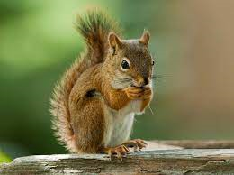
National geographic
Bufalo
Los búfalos son unos bóvidos de gran tamaño procedentes principalmente de la zona del sudeste asiático. Se pueden encontrar en la actualidad búfalos salvajes y búfalos domésticos y se les puede localizar en muchas partes del mundo.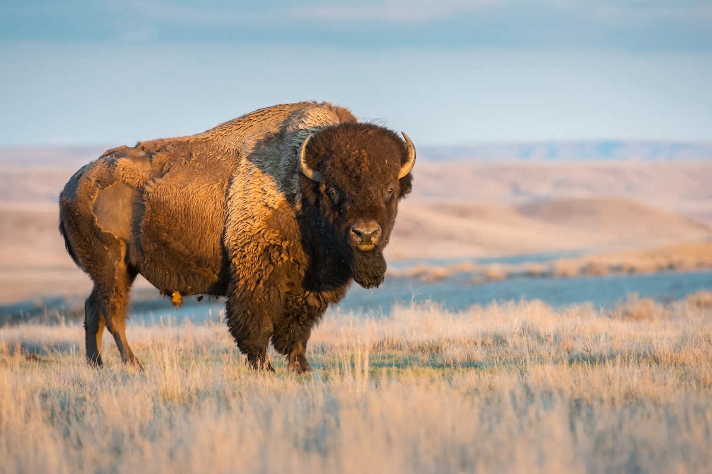
Mas informacion...
Cuervo
El cuervo se caracteriza por presentar un plumaje negro lustroso, las plumas de su garganta son duras, su pico es muy fuerte y también negro. La cola es alargada y en forma de cuña. La longitud total de esta ave es de 50 a 63 cm, mientras el peso varía de 950 a 1300 gramos.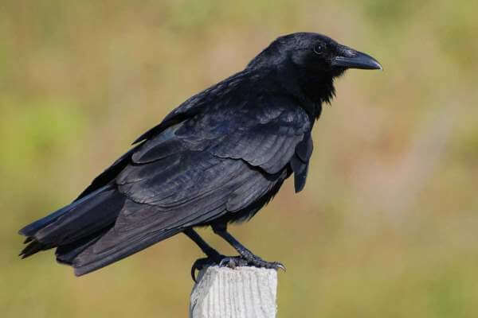
Mas informacion...
Delfin
Los delfines son un tipo de mamíferos cetáceos pertenecientes a la familia Delphinidae. Pueden vivir más de 30 años en cautividad y tienen una longitud de 3,5 metros aproximadamente.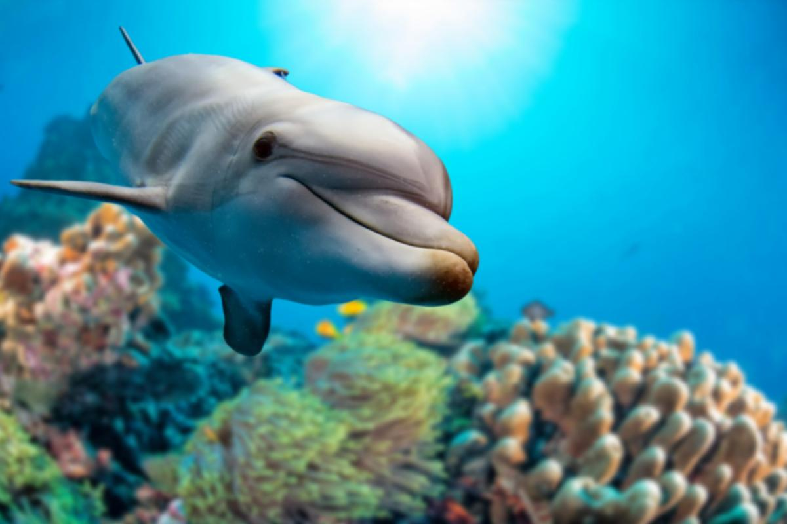
Mas delfines...
Elefante
Es el mamífero más grande de la tierra puede pesar hasta ocho toneladas y mide 3 metros de alto por 7 de largo. Con grandes orejas en forma de abanico y una larga trompa.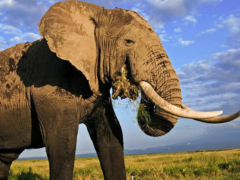
Mas elefantes...
Foca
Tienen cuerpos alargados y fusiformes, adaptados a la natación; las extremidades anteriores son cortas y aplanadas, mejor preparadas para su uso como aletas que para el desplazamiento en tierra.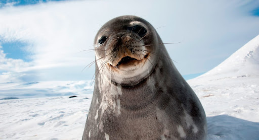
Mas focas...
Gato
Es vertebrado porque tiene huesos y principalmente carnívoro porque se alimenta de carne y otros pequeños animales. Es un animal mamífero porque nace vivo de la madre y mama para alimentarse. Tiene el cuerpo cubierto de pelo, tiene cuatro patas y rabo.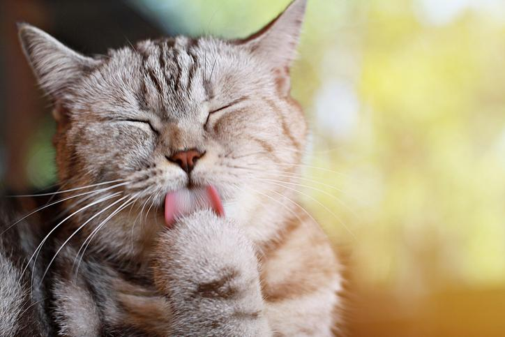
Mas gatos...
Hipopotamo
Los hipopótamos son una familia de mamíferos grandes y pesados, de vida anfibia, de la cual sobreviven únicamente dos especies en la actualidad.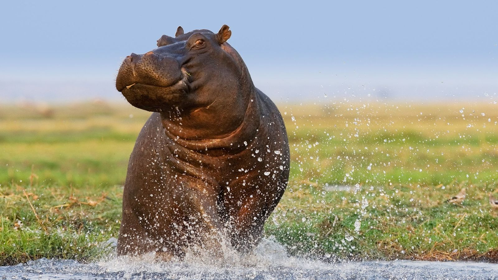
Mas info...
Iguana
Con el nombre de iguana se denomina a un género de reptiles escamosos de gran tamaño, que científicamente se denominan familia iguaninae.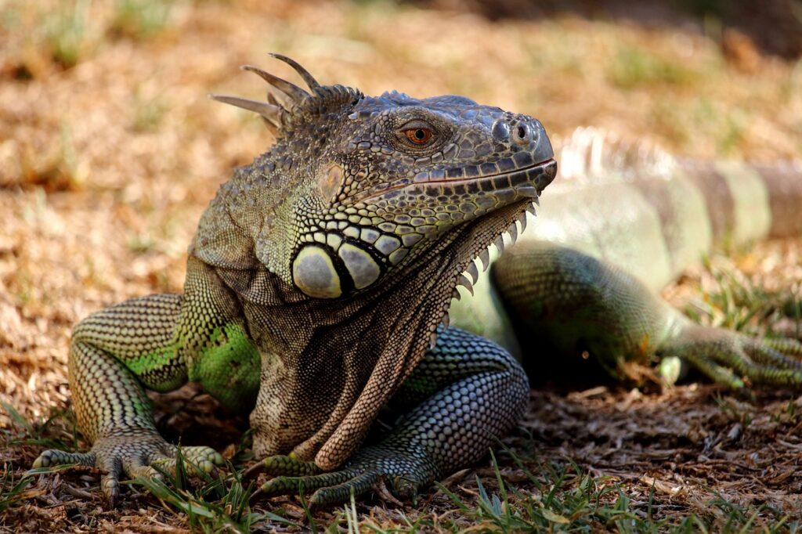
Mas iguanas...
Jirafa
La jirafa es el animal terrestre más alto del mundo y uno de los protagonistas indiscutibles de la sabana africana.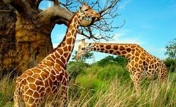
Mas jirafas...
Koala
A pesar de que parecen verdaderos osos de peluche, este adorable animal es un marsupial emparentado con los canguros que nada tiene que ver con los osos.
Mas Koalas...
Lagartija
Las lagartijas son reptiles pequeños con cuerpos alargados, fáciles de distinguir a simple vista.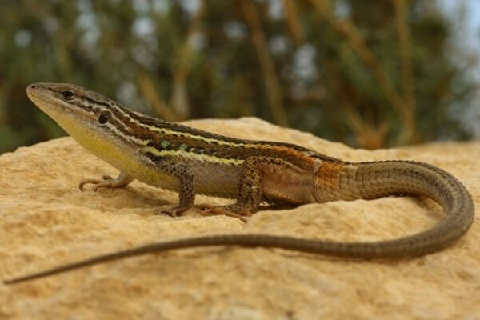
Mas lagartijas...